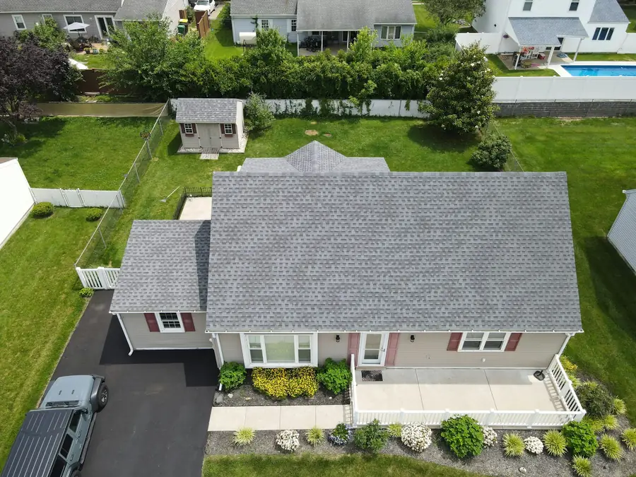

I had an amaxing experience with GFR Roofing! I reached out for a bid to have an old satellite removed and shingles repaired, and not only was the estimate fair and straightforward, but Joe came back the same day to complete the repair. The work was done quickly, professionally, and with great attention to detail. The whole process was completely stress-free. I really appreciated the fast response time and reliability. I would absolutely recommend GFR Roofing and wouldn’t hesitate to use them again.
Home / About
A Victoria roofer, in their customers’ words.
GFR Roofing is a roofing contractor in Victoria, Texas. We keep this page to what Google shows and what customers wrote, so you get facts, not slogans.
Who they are
Local, listed on Google, rated 5.0.
GFR Roofing is listed on Google Maps as a roofing contractor in Victoria, TX with a 5.0 rating from 32 reviews. The business replies to its reviewers on Google.
Customers refer to Joe and his wife Marlee, and to the crew. One customer called GFR a local company. Beyond that we do not publish a company history, because none has been confirmed.

In their words
“GFR is great! I needed a new flat roof and I shopped around. GFR had the best price and best plan to get the job done.”Steven Zielinski, Google review, a year ago
What customers mention
Quick replies, clear communication, tidy finishes.
Each line below is a sentence taken straight from a verbatim Google review, not rewritten.
Communication
Reviewers say they were kept in the loop.
“Communication was very good and they were a pleasure to work with.”CCG, Google review
Clean job sites
Customers mention the crew cleaning up.
“Picked up all remaining trash, etc from the repair and left the repair looking perfect!”Brandi Barthels, Google review
Fast replies
Speed shows up across several reviews.
“I really appreciated the fast response time and reliability.”Victoria Amar, Google review
On the roof
Roofing, up close.


Stock photos for atmosphere. They are not GFR Roofing’s crew or jobs.
5.0
Rated 5.0 on Google by 32 customers
If you need any type of roof done contact these people they are great the nicest people and they do such a good job. It was baking heat and they worked tirelessly. Getting my roof done and did an excellent job. Highly recommend with a good price range.
GFR is great! I needed a new flat roof and I shopped around. GFR had the best price and best plan to get the job done. Also they gave me pictures I could use when I sell my building. A new roof is always a plus in Victoria. I will use them again for any other roofing in Victoria!
Great folks to work with.
I needed my roof repaired before closing date and they delivered. It wasn't a big job, so I was impressed that they took time for my project even though they had bigger ones to take care of. Communication was very good and they were a pleasure to work with. Thank you, Joe and Marlee. Much blessings to your family and business.
We had a large building that had a hole in the roof. The grade is very steep on the roof. The GFR team was very professional, came and gave a bid, scheduled a time for the repair, came on time, repaired, picked up all remaining trash, etc from the repair and left the repair looking perfect! It's holding up great! I personally would recommend the GFR team for any roofing job if your looking for honesty, integrity and a great job!
You can use me as a reference!
I have been getting leaks in my house off and on in the same spot for years. HVAC says it’s the roof, roofer with the builder says it’s the hvac. I decided to get a roofing company not affiliated with my builder and they found the issue and fixed it. Thank you soooo much !!!
I just wanted to take a moment to express how impressed I am with the efficient and professional service GFR Roofing provided during the inspection of the house I'm purchasing. It's not often you come across such professional roofers. If you're in the market and want top-notch service, look no further than GFR Roofing. They are definitely the right company!
I have worked with 4-5 roofers in the Port O’Connor area over the years. Joe was referred to me by another trusted contractor I use locally. Patrick Harrington. I trust Patrick and I am very thankful. Joe was reliable, professional and has my trust going forward. He finally fixed my roof correctly and affordably that at least 2-3 others just couldn’t seem to do.
Selection of verbatim Google reviews, rating as shown on Google November 2026. View the Google profile.
Need a roofer in Victoria?
Call GFR Roofing, tell them what is going on with your roof and ask for an estimate.